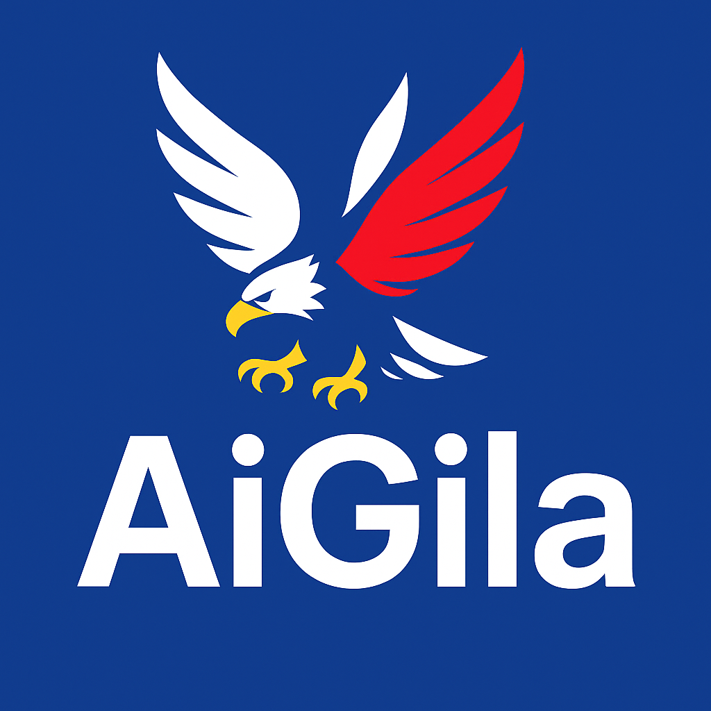

Navigate the world of information with AI-powered fact-checking, community insights, and real-time trending analysis. AiGila empowers you to distinguish truth from misinformation.
Start Fact-Checking NowAiGila uses advanced AI and crowdsourced insights to identify misinformation and verify news, helping you stay informed and empowered.